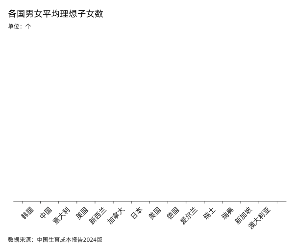
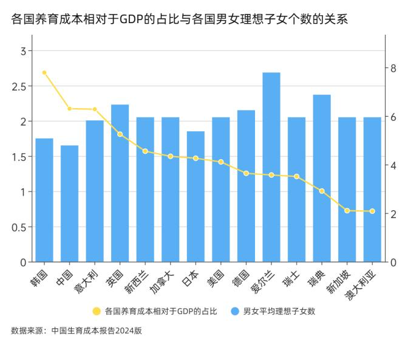

国际经验
全球视野下的生育政策：成功案例与失败教训
1.79
法国生育率
0.7
韩国生育率
78%
瑞典男性育儿参与率
3.2%
法国育儿补贴占GDP比重
生育成本与生育率的关系
📊 全球规律：生育成本越低，生育率越高
从全球来看，生育率与生育成本有明显的相关关系。家庭的生育成本越低，生育意愿越高，生育率也就越高。
国际对比核心数据：
韩国
成本：7.79倍GDP
生育率：0.7
成本：7.79倍GDP
生育率：0.7
中国
成本：6.9倍GDP
生育率：低位
成本：6.9倍GDP
生育率：低位
法国
成本：2.24倍GDP
生育率：1.79
成本：2.24倍GDP
生育率：1.79


韩国的生育困境
🇰🇷 韩国：全球最低生育率的成因
韩国的经历为我们提供了重要的反面教材：
成本负担
- 养育成本：7.79倍GDP
- 全球最高水平
- 家庭难以承受
女性困境
- 生育后职业中断者：81%
- 职场歧视严重
- 社会支持不足
结果：总和生育率仅为0.7，创历史新低，人口危机日益严重。
法国模式
🇫🇷 法国：综合支持体系的成功
法国通过一系列综合措施，成功维持了相对较高的生育率：
法国政策体系：
💰 经济支持
- 育儿补贴占GDP的3.2%
- 多样化的家庭津贴
- 税收优惠政策
🏫 托育服务
- 普惠的托育服务
- 覆盖面广
- 质量有保障
👨👩👧👦 假期制度
- 父母共享育儿假
- 灵活的假期安排
- 就业保障
成果：将养育成本降至GDP的2.24倍，生育率维持在1.79的相对高位。
瑞典模式
🇸🇪 瑞典：性别平等的育儿模式
作为北欧国家之一，瑞典的经验更具启示性，特别是在推动父亲参与育儿方面：
政策设计
- 父母共享480天产假
- 其中90天专属父亲
- 不休即作废
显著成效
- 男性育儿参与率：从3%→78%
- 总和生育率：稳定在1.6以上
- 性别平等显著改善
"强制父亲休满90天育儿假后，男性育儿参与率从2000年的3%跃升至2024年的78%"
其他成功经验
🇳🇴 挪威模式
强制性父亲育儿假：
- 父亲必须休满12周
- 否则家庭失去这部分假期
- 有效提高了男性参与度
- 减轻了女性职业负担
🇮🇸 冰岛创新
"6+6"产假分配：
- 母亲6个月，父亲6个月
- 女性就业率提升11%
- 薪酬差距缩小23%
- 企业用工成本性别差异消除
🇩🇪 德国经验
灵活的育儿假制度：
- 父母可分享14个月育儿假
- 父亲至少休2个月
- 可分期使用至孩子8岁
- 就业保护措施完善
🎯 成功的核心机制
通过分析各国成功经验，可以总结出以下核心机制：
关键要素：
1. 成本分担
政府承担主要责任，通过税收和社会保险分散成本
2. 性别平等
强制父亲参与育儿，消除企业用工性别偏见
3. 服务支撑
完善的托育服务体系，减轻家庭照护负担
4. 制度保障
完善的法律保护和就业保障机制